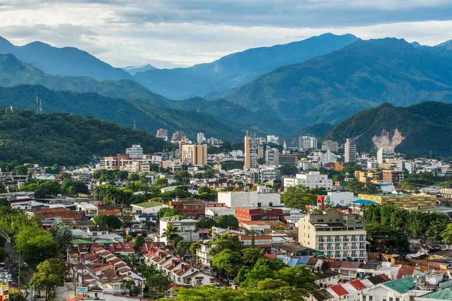
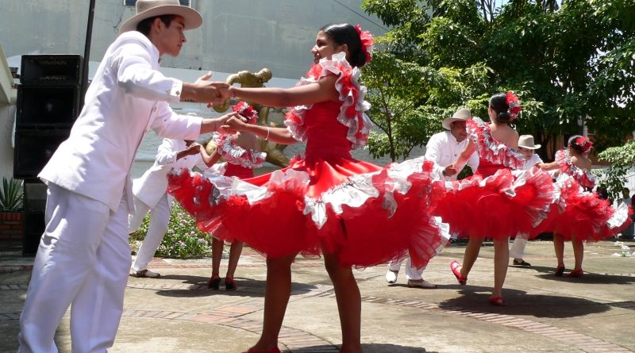
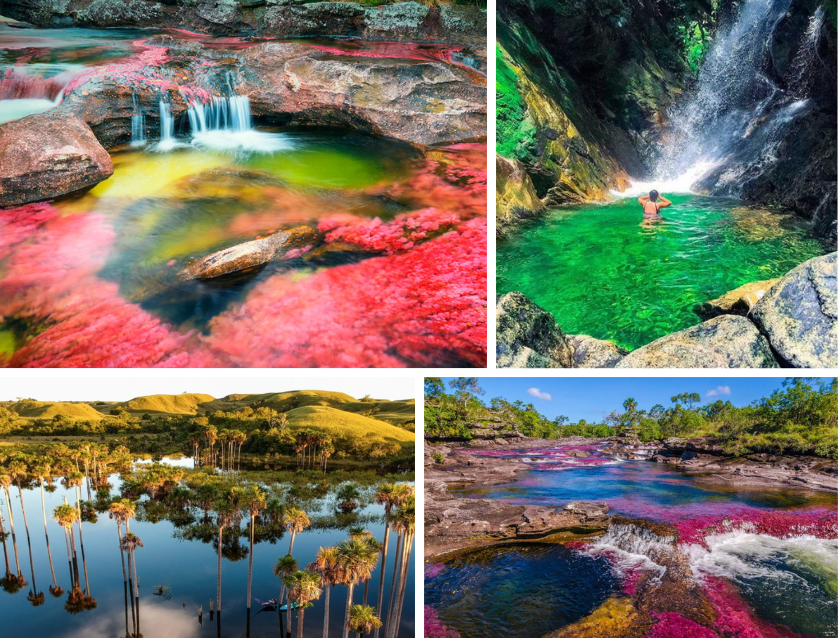

El Meta es un departamento de Colombia ubicado en la región de los Llanos Orientales, caracterizado por sus extensas sabanas, montañas y ríos. Tiene una superficie de aproximadamente 85,635 km² y una población de más de 1 millón de habitantes.
Su capital es Villavicencio, una de las ciudades más importantes de los Llanos Orientales de Colombia. Conocida como la "Puerta de los Llanos", se encuentra a aproximadamente 90 kilómetros al sureste de Bogotá, lo que la convierte en un punto de acceso estratégico entre la capital colombiana y la región llanera.


El Meta es un centro importante de la cultura llanera, que tiene profundas raíces en las tradiciones ganaderas y la vida en el campo. La música joropo, las competencias de coleo, y las festividades tradicionales son parte integral de la identidad cultural del Meta. En Villavicencio se celebran eventos como el Torneo Internacional del Joropo, que atrae a visitantes y artistas de toda la región.
El turismo en el Meta ha crecido gracias a sus paisajes naturales únicos. Aparte de caño Cristales, el departamento cuenta con atractivos como el Parque Nacional Natural Sierra de La Macarena, la Reserva Natural de Lagos de Menegua, y los ríos y cascadas de Cubarral. El ecoturismo es una actividad cada vez más popular en la región, que ofrece experiencias cercanas a la naturaleza.
